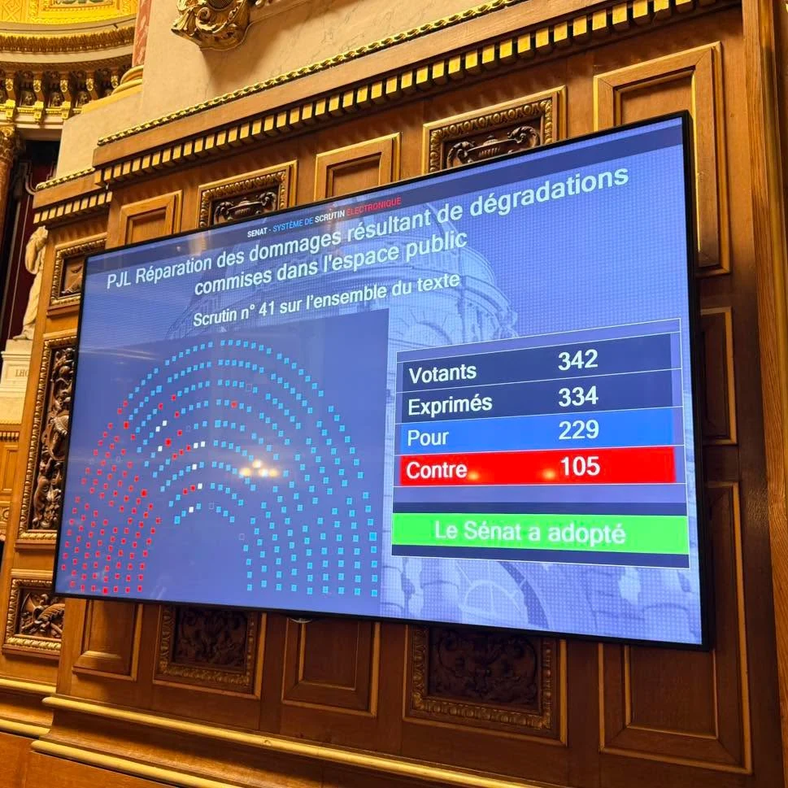

Publication relayée par le PCF 79
Projet de loi casseurs-payeurs
Date indiquée par Facebook · 28 octobre 2026
Texte de la publication · Fabien Gay
Projet de loi casseurs-payeurs
Nous avons bataillé toute la journée et une partie de la nuit, mais le projet vient d’être adopté par les droites sénatoriales et l’extrême droite. Vous pourrez donc être reconnu·e civilement responsable, si le texte est adopté à l’Assemblée nationale, d’un acte que vous n’avez pas commis. La droite sénatoriale a donné le point à l’extrême droite, notamment en pointant du doigt les plus précaires et les plus pauvres du pays et en permettant de ponctionner directement les allocations familiales, les APL et même le RSA. Elle a aussi redonné vie à la double peine pour les étrangers. Mais ce texte ne règlera rien, surtout pas la crise sociale et politique que nous traversons. Il faut une réponse politique et non répressive. On continue de se mobiliser !
Repères éditoriaux
Nous relayons la réaction de Fabien Gay après le vote au Sénat. Dans le texte d’origine, il situe les mesures contestées au stade du projet et appelle à poursuivre la mobilisation.

Sources
Fabien Gay · fil Facebook · relais du PCF 79 · FB-1451894493790466
À lire aussi · Loi intégrale contre les violences sexistes et sexuelles : de premières victoires et une lutte qui doit se poursuivre